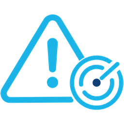
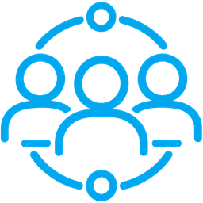
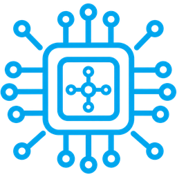
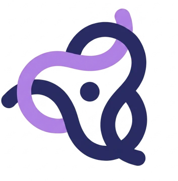
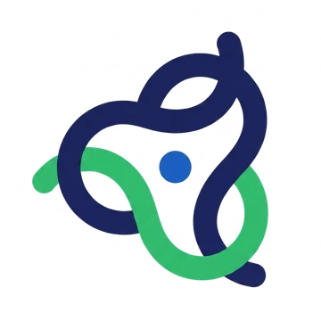
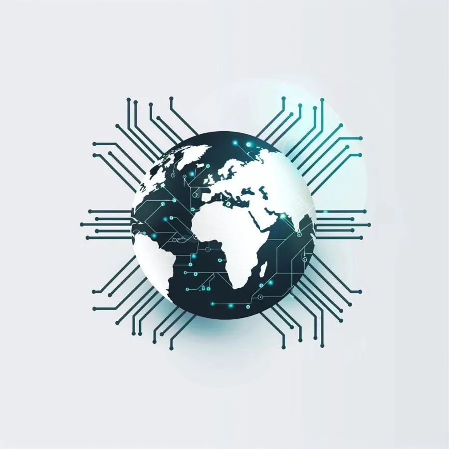

RisquesMesurer l'exposition et prioriser
Prestations, solutions et formations en cybersécurité.
SICARE évoque à la fois le soin porté au système d'information et une posture de discrétion, de précision et de détermination.
Prendre soin du système d'information, c'est comprendre ce qu'il faut protéger, mesurer les risques et agir avec justesse. La référence au sicaire suggère une autre exigence : avancer avec discrétion, viser juste et maîtriser son action.
Chez SICARE, cette posture guide la manière d'analyser, de conseiller et d'intervenir.
S.I. Système d'information
Comprendre un système d'information, évaluer ses risques, renforcer ses défenses et préparer les équipes à agir : les enjeux cyber sont liés.
SICARE accompagne cette réalité dans sa globalité. Nous aidons à clarifier les priorités, à définir les réponses adaptées et à mobiliser les expertises nécessaires — des prestations aux formations, jusqu'aux solutions techniques.



Trois familles d'offre complémentaires, pour éclairer les décisions, développer les compétences et équiper les organisations.
Conseil, audit et accompagnement opérationnel pour éclairer les décisions et conduire les actions cyber.
Découvrir nos prestations 02Des formations courtes et professionnalisantes pour développer des compétences directement mobilisables en cybersécurité.
Découvrir nos formations 03Des solutions matérielles et logicielles sélectionnées ou développées pour répondre à des besoins de cybersécurité.
Découvrir nos solutionsSICARE propose des formations professionnelles consacrées à la cybersécurité. Chaque parcours vise des compétences directement mobilisables et précise ses objectifs, son public, son format et sa durée.
Inter-entreprises, intra-entreprise et parcours adaptés — selon les modalités proposées pour chaque formation.
La cybersécurité s'appuie sur des compétences complémentaires. Il faut comprendre les risques, éprouver les défenses, repérer les signaux utiles et savoir réagir lorsqu'un incident survient.
Évaluer les risques, structurer la démarche de sécurité et accompagner la conformité.
Identifier les vulnérabilités et éprouver la résistance des systèmes dans un cadre défini.
Recueillir et analyser des informations ouvertes pour mieux comprendre les menaces et les expositions.
Un centre opérationnel de sécurité surveille les événements, qualifie les alertes et contribue à la détection des incidents.
Organiser la réponse, limiter les effets de l'incident et accompagner le retour à une situation maîtrisée.
Un enjeu cyber peut demander une décision de gouvernance, une intervention technique, une montée en compétence ou le renforcement d'un dispositif existant.
SICARE peut réunir ces leviers autour d'un même objectif : les prestations définissent et conduisent les actions, les formations aident les équipes à se les approprier, et les solutions techniques complètent le dispositif lorsque le besoin le justifie.
Vous avancez avec une lecture commune de la situation et des réponses coordonnées, plutôt qu'avec des actions isolées.

TransmissionAu sein de Brydge Group, ESTUDECH contribue au développement et à la transmission des compétences. Les experts SICARE peuvent y partager leur expérience, tandis que la formation continue entretient leur maîtrise.
SICARE conduit les missions de cybersécurité et accompagne ses clients avec ses propres professionnels. L'écosystème du groupe nourrit leur expertise, la transmission des savoirs et les solutions proposées aux clients.

InnovationFactoryD explore et incube de nouvelles solutions. Certaines peuvent ensuite enrichir l'offre SICARE et être proposées en exclusivité.
En cybersécurité, la confiance implique aussi de la discrétion. Les références présentées ici le sont avec l'accord des organisations concernées.
Priorités de risque, gouvernance, dépendances technologiques, préparation à la crise : les choix cyber engagent la capacité d'une organisation à maîtriser son exposition et à tenir dans la durée. Les consultants de SICARE partagent leurs analyses et leurs prises de position — avec, lorsque le sujet s'y prête, des regards croisés d'experts de Syngularit.ai, Dyvision7 ou Geopoliteck.
Inventaire des actifs, scénarios de menace, priorisation : une méthode en trois temps pour transformer une liste de risques en feuille de route.
Au-delà de l'obligation, la directive est l'occasion de clarifier la gouvernance cyber et d'impliquer réellement les directions.

Regards croisésFournisseurs, cloud, données : un consultant SICARE et un analyste de Geopoliteck croisent leurs lectures des risques de souveraineté.
Vous préparez un audit, une mise en conformité, un exercice de crise, une montée en compétence ou un projet d'équipement ? Présentez-nous votre objectif. SICARE vous orientera vers le bon point d'entrée : une prestation, une formation ou une solution cyber.